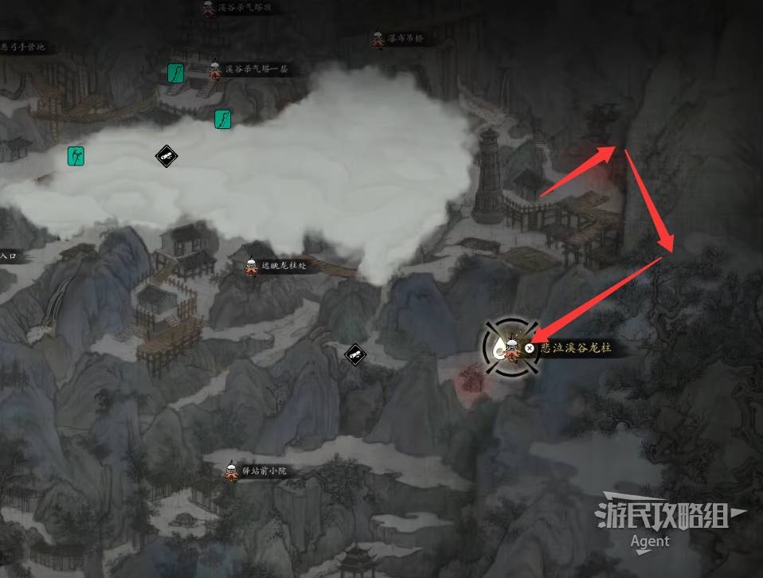

飾品錯過不再
影動獵殺儀
聖母像裂縫鈴鐺 → 抓鐵鏈跳到對面平臺
離開【聖母像裂縫】鈴鐺後，路邊先撿穿行符，再抓鐵鏈跳過去，擊敗平臺上的鐮刀敵人。效果是對正在出招的敵人傷害與殺氣削減 +7%，前期非常實在。
錯過條件容易只顧往前走而漏掉。看到鐵鏈就跳，錯過可回頭補。
對出招中的敵人 +7% 傷害與削氣

溪谷的支線有明確的斷點：驛站的人在血色森林之後會全部死去，玉兒的兩個任務、房頂老頭的羽弓、嚇破膽弟子的護腕，全都只剩這一段時間。先做支線，再推主線，這是溪谷唯一的正確順序。
① 玉兒的【見習醫師】到血色森林的荊野戰後就斷；② 房頂老頭的【清理門戶】在驛站眾人死去後無法完成；③ 嚇破膽弟子的【堅巖護腕】在打完血色森林後拿不到。

只保留確認對應的頭目實機畫面；其餘一律用名刺卡，避免圖不對題。
 頭目實機
頭目實機
 頭目名刺・會錯過
頭目名刺・會錯過
 頭目實機
頭目實機
 頭目實機・會錯過
頭目實機・會錯過
 頭目實機
頭目實機
 頭目名刺・會錯過
頭目名刺・會錯過
完成度只存在你的瀏覽器；換裝置不會同步。